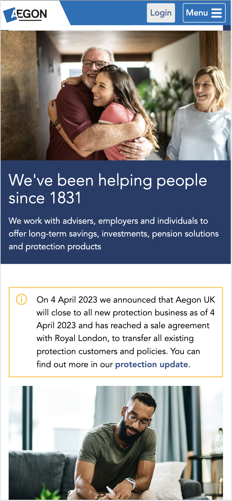
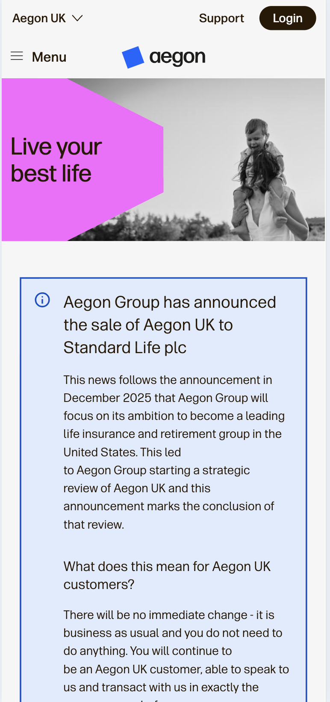
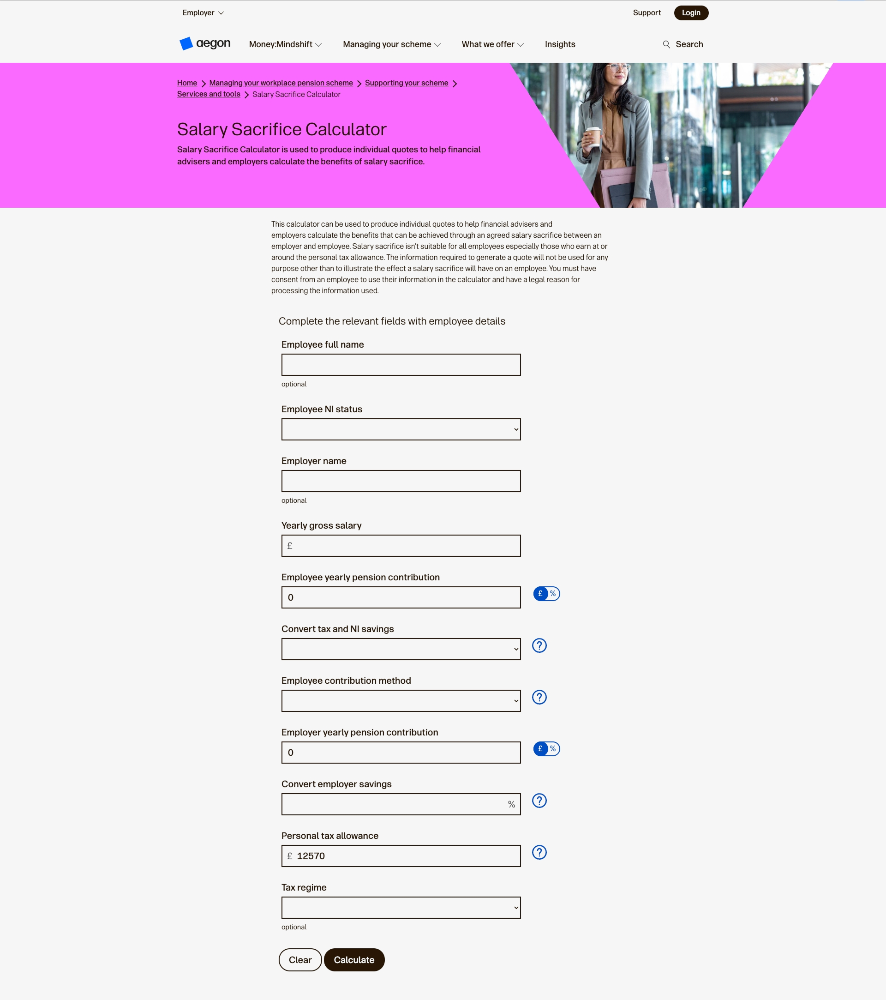
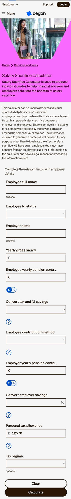

Financial services case study
Rebranding a regulated financial service
Applying a global company-wide rebrand to accessible, responsive components and production-ready UI for a live regulated UK financial service.
- Role
- Senior UI Designer
- Users
- Product teams, customers, advisers and employers
- Scope
- UK product, component redesign and UI UAT
Overview
Bringing the new brand to the UK product
The wider brand programme was global, while my responsibility focused on the UK product and public website. The challenge was not simply to restyle the experience, but to translate the more expressive identity into dependable digital components within an established, regulated UK platform.
My responsibility was to turn the new direction into consistent, production-ready UI while protecting accessibility and usability through launch. I redesigned components, reviewed their use across the website and connected design intent with the implemented experience through detailed UAT.
User ecosystem
Designing for the teams building the service and the people using it
The components and design-system patterns served two connected groups. They needed to help internal teams deliver consistently while creating clear, accessible experiences for the audiences using the financial propositions.
Internal product teams
UX designers, UX researchers, product owners, project managers, developers and marketing managers using shared patterns to design, build and communicate the propositions.
End users
Customers, advisers and employers relying on the resulting products and services to understand information and complete important tasks.
My role
Owning component redesign and UI quality assurance
- Redesigned components for the new visual identity
- Updated the salary-sacrifice calculator and interaction states
- Reviewed responsive layouts, hierarchy and component structure
- Led detailed UI checks across the website during UAT
- Documented issues and worked with engineering and product through resolution
Design approach
Balancing expressive branding with accessibility and existing architecture
The work required more than a visual reskin. New colours, shapes and visual expression had to work within established code and component architecture while remaining clear, accessible, responsive and structurally sound.
Use the existing architecture
Adapt the brand to reusable components and established journeys rather than destabilising working product structures.
Make expression accessible
Introduce a richer colour palette and more distinctive shapes without weakening contrast, focus visibility or comprehension.
Design beyond fixed screens
Assess spacing, typography and layout fluidity between breakpoints—not only in ideal desktop and mobile frames.
Before the redesign
The previous website experience
These desktop and mobile examples show the website before the new brand was applied. They provided an important reference point for assessing how hierarchy, styling and reusable components needed to evolve across the responsive experience.

After the rebrand
The redesigned responsive experience
The redesigned experience introduced the new visual identity across typography, component styling, content hierarchy and responsive layouts.
The website experience needed to communicate the broader service proposition clearly across devices. I reviewed how hierarchy, content, navigation and calls to action translated from desktop to mobile so the experience remained clear, readable and easy to act on.

- Simple page hierarchy that supported scanning and comparison
- Plain-language content and guidance for a complex financial proposition
- Responsive layout patterns that kept key content readable on smaller screens
- Calls to action that supported exploration without forcing commitment too early
Component redesign
Redesigning the salary-sacrifice calculator
The calculator enabled users to enter salary information and see potential savings generated through salary sacrifice. The experience needed to make a financial calculation feel simple and accessible while maintaining clarity and confidence.
I redesigned the calculator interface to align it with the new identity, brand standards and established component patterns. This included the presentation of guidance, inputs, validation and calculated outcomes across desktop and smaller screens.


- Alignment with the new identity and visual brand standards
- Consistent typography, spacing and component styling
- Clear visual hierarchy between guidance, inputs and outcomes
- Consistent validation and interaction states
- Responsive behaviour on smaller screens
- Alignment with established design-system patterns
Agile delivery
Finding hundreds of issues through collaborative UAT
As components and pages moved into the live implementation, our team conducted systematic UAT across the full component set. I manually reviewed the UK website across screen sizes and assistive-technology behaviour to confirm that the new brand had been translated correctly and the underlying experience remained sound.
The review generated hundreds of documented issues. My UI and accessibility checks concentrated on:
- Grid alignment and responsive spacing
- Fluid behaviour between defined breakpoints
- Typography reflecting the correct breakpoint
- Keyboard tab order and focus visibility
- VoiceOver labels and interaction feedback
- Component fidelity and consistent state behaviour
- Review the implemented page or component within the delivery cycle
- Compare it with the approved design, brand standards and established UI patterns
- Record the issue clearly with supporting context
- Prioritise issues with the team based on user impact and severity
- Discuss practical fixes with product owners, engineers and project managers through the Scrum workflow
- Recheck the implementation after changes were made
This made UI quality assurance a visible part of delivery rather than a final cosmetic check. Issues were recorded with clear context, prioritised with the Agile team and rechecked after changes were made.
Wider platform context
A high-traffic service with sustained use
- 13%Increase in average time on site between 2024 and 2026
- 4%Increase in average monthly visits between 2024 and 2026
These figures reflect wider platform performance and provide context on the scale and sustained use of the live service.
Outcome
Launching a consistent, accessible and brand-aligned service
The UK public website launched as part of the wider global rebrand. My contribution helped translate the identity into a consistent responsive experience through redesigned components, a brand-aligned salary-sacrifice calculator and rigorous UI UAT across the full component set.
By identifying hundreds of implementation issues and working through them with product and engineering colleagues, I helped protect design quality, responsive behaviour and accessibility as the new experience went live.
Reflection
What the UK release reinforced
- A new identity only becomes a product experience when it works at component, page and journey level
- Expressive branding must be tested with keyboard and assistive-technology behaviour, not assessed visually alone
- Responsive quality depends on fluid behaviour between breakpoints
- Embedded UAT and clear issue documentation improve collaboration and release quality